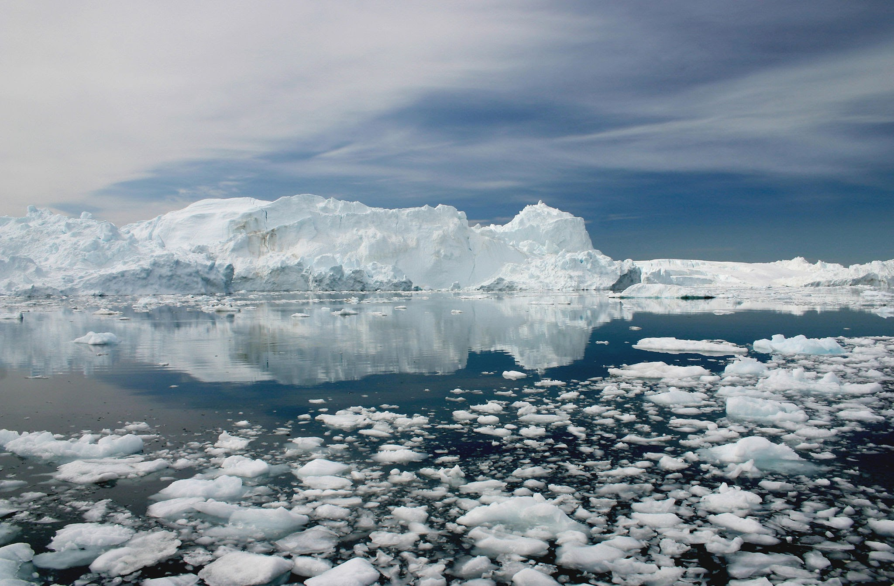
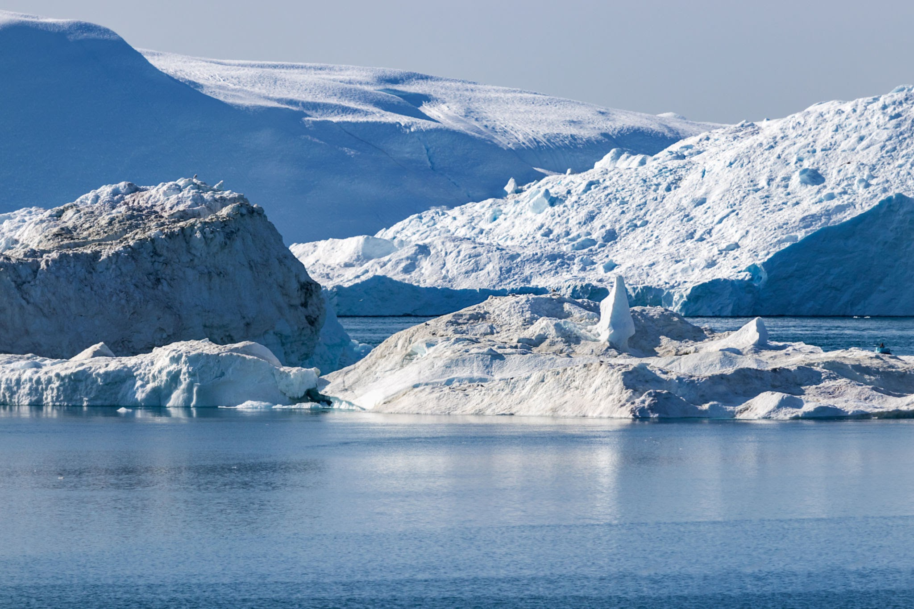
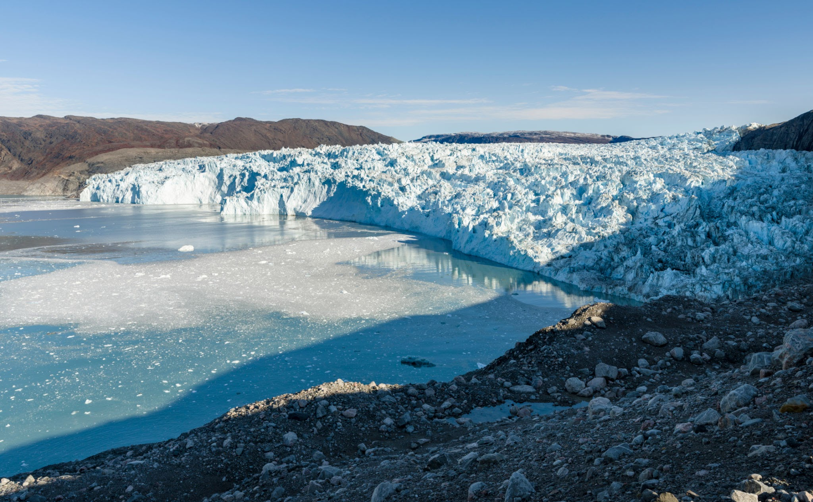
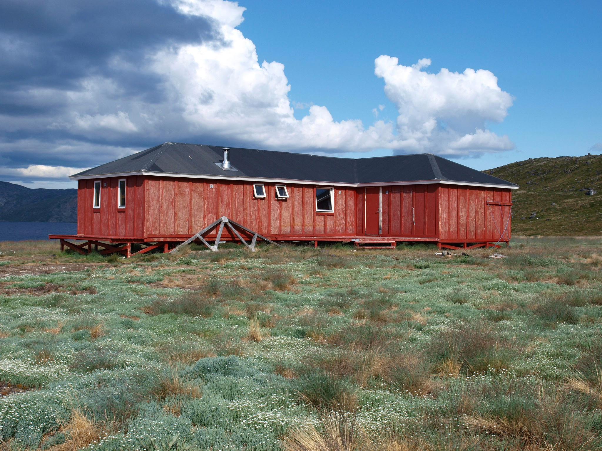
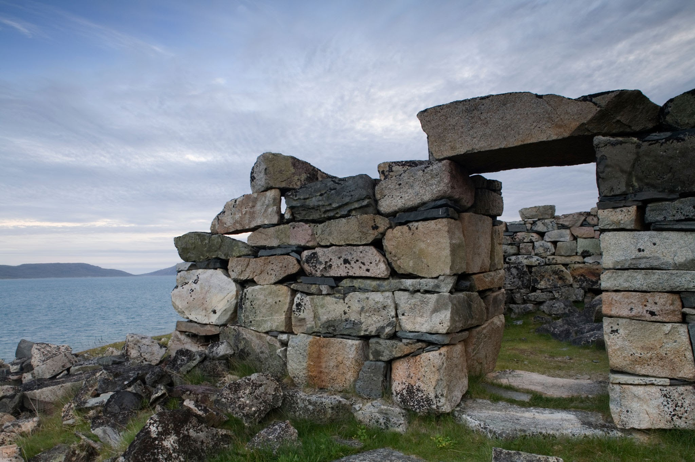

Greenland is the world's largest island, located between the Arctic and Atlantic oceans, east of the Canadian Arctic Archipelago. It is an autonomous territory within the Kingdom of Denmark.
What are you looking for?
Snow and Ice Grounds



Ilulissat Jakobshavn Glacier Eqip Sermia
Museums and Memorial Housings


Arctic Circle Trail Nuuk Art Museum Hvalsey Church
Tips of visiting Greenland
- Contact your medical practitioner before travelling to Greenland and make sure you are up to date on any vaccinations needed
- Water is very much safe to drink in Greenland. It is also possible to drink water from lakes and rivers. It is also possible to use the ice from icebergs in your drink!
- The Greenland diet relies heavily on fish, seafood and meat. Be careful with food allergies
- The official currency in Greenland is the Danish krone, written as DKK.
- Goods in Greenland are relatively expensive compared to that of Europe, Australia and North America.